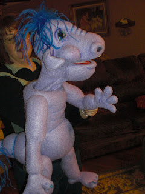

Cletus - not so magic dragon
6/26/2009
{kind=link}

The Dummy Shop sent me this announcement the arrival of "Cletus the Non-Magic Dragon". Cletus (pronounced "Cleet us") is a 31" tall, fully soft sculptured, rear entry puppet. As I've mentioned before on this blog, I always smile when I read the Biography provided with their puppets. When the maker creates a puppet, there is time to think, not only about what the puppet will look like, but who it is. A good excercise for anyone and their vent pal, whether they made it or not.
Cletus's Biography
Cletus is a young dragon. You may not know it, but dragons continue to grow throughout their entire life. We are not exactly sure of Cletus's birth date, but we think he is about five years old. Cletus is a happy-go-lucky character, and he absolutely loves having children as his friends (quite unlike so many of his species who like having them for food).
Cletus finds children's laughter to be infectious and begins to giggle uncontrollably when he hears the tots laughing and enjoying themselves. Cletus delights in being rubbed behind his right ear, and when he is being rubbed gently will most often set him into a low throated purr of contentedness.
Cletus will often try to breath fire, knowing that dragons are supposed to do that, but so far he has been completely unsuccessful in his efforts, which is a great frustration to him.
He loves eating great quantities of grape jelly, which we suspect may contribute somehow to his skin color, and we are sure it helps the fruity smell of his breath.
Given just half a chance, Cletus would welcome the chance to become your new best friend.
Cletus is a young dragon. You may not know it, but dragons continue to grow throughout their entire life. We are not exactly sure of Cletus's birth date, but we think he is about five years old. Cletus is a happy-go-lucky character, and he absolutely loves having children as his friends (quite unlike so many of his species who like having them for food).
Cletus finds children's laughter to be infectious and begins to giggle uncontrollably when he hears the tots laughing and enjoying themselves. Cletus delights in being rubbed behind his right ear, and when he is being rubbed gently will most often set him into a low throated purr of contentedness.
Cletus will often try to breath fire, knowing that dragons are supposed to do that, but so far he has been completely unsuccessful in his efforts, which is a great frustration to him.
He loves eating great quantities of grape jelly, which we suspect may contribute somehow to his skin color, and we are sure it helps the fruity smell of his breath.
Given just half a chance, Cletus would welcome the chance to become your new best friend.
Contact The Dummy Shop at dummylady01@gmail.com